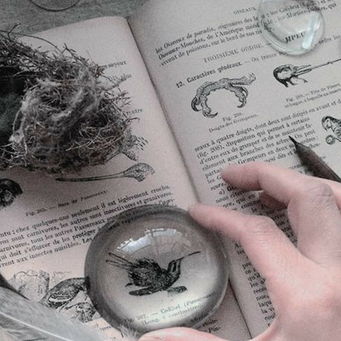

Study of Magizoology
~ ~ ~ ~ ~ ~ ~ ~ ~ ~ ~ ~ ~ ~ ~ ~ ~ ~
CREATED WITH CHATGPT
~ ~ ~ ~ ~ ~ ~ ~ ~ ~ ~ ~ ~ ~ ~ ~ ~ ~

Magizoology is the study of magical creatures, focusing on their biology, behavior, and the role they play in the wizarding world. Magizoologists research and catalog species, preserve habitats, and promote safe coexistence between wizards and creatures. The field requires both practical handling skills and a strong understanding of magical ecology, making it essential for conservation and magical research.
A leading figure in this discipline is Newt Scamander, author of Fantastic Beasts and Where to Find Them. Through extensive travel and fieldwork, Scamander documented numerous species with remarkable detail and compassion. His research not only advanced knowledge of magical creatures but also helped shape modern practices of care and protection, securing his legacy as one of the most influential magizoologists in history.